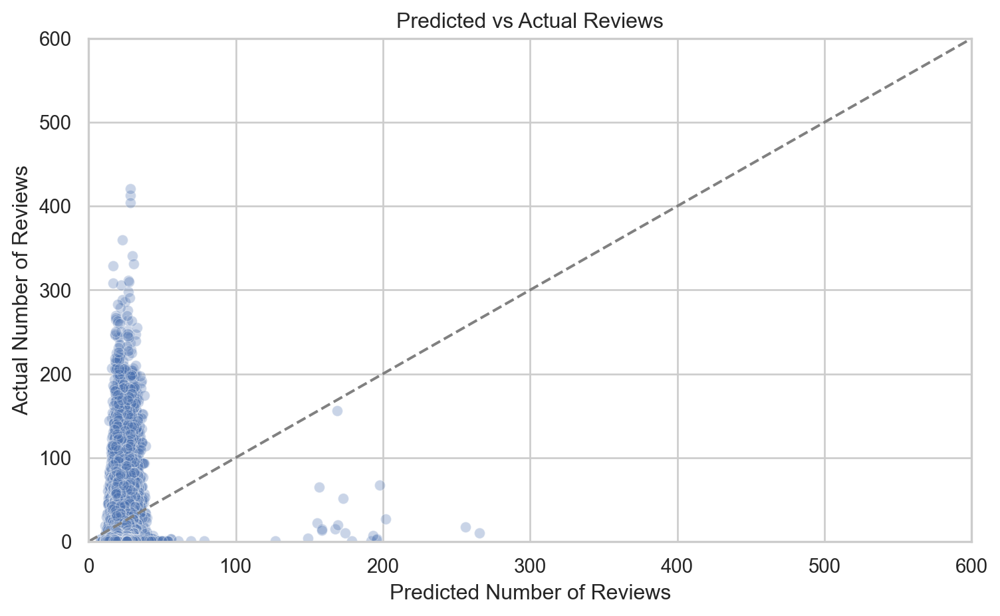

Blueprinty is a small firm that makes software for developing blueprints specifically for submitting patent applications to the US patent office. Their marketing team would like to make the claim that patent applicants using Blueprinty’s software are more successful in getting their patent applications approved. Ideal data to study such an effect might include the success rate of patent applications before using Blueprinty’s software and after using it. Unfortunately, such data is not available.
However, Blueprinty has collected data on 1,500 mature (non-startup) engineering firms. The data include each firm’s number of patents awarded over the last 5 years, regional location, age since incorporation, and whether or not the firm uses Blueprinty’s software. The marketing team would like to use this data to make the claim that firms using Blueprinty’s software are more successful in getting their patent applications approved.
Data
import pandas as pd# Load the Blueprinty customer datadf = pd.read_csv("blueprinty.csv")# Show basic info and first few rowsdf.info(), df.head()
Customers of Blueprinty tend to have a slightly higher number of patents than non-customers. The mean number of patents for non-customers is 3.47, while for customers it is 4.13. The histogram confirms this difference: while both groups are centered around 2 to 5 patents, Blueprinty customers are skewed slightly toward higher patent counts. This suggests a potential relationship worth modeling, though further analysis is needed to control for other factors such as firm age and region.
import pandas as pdimport matplotlib.pyplot as pltimport seaborn as snsdf = pd.read_csv("blueprinty.csv")sns.set(style="whitegrid")mean_patents = df.groupby("iscustomer")["patents"].mean()plt.figure(figsize=(10, 5))sns.histplot(data=df, x="patents", hue="iscustomer", bins=20, kde=False, multiple="dodge")plt.xlabel("Number of Patents")plt.ylabel("Count")plt.title("Distribution of Patents by Customer Status")plt.legend(title="Customer", labels=["Non-customer", "Customer"])plt.tight_layout()plt.show()mean_patents
Blueprinty customers are not selected at random. It may be important to account for systematic differences in the age and regional location of customers vs non-customers.
import seaborn as snsimport matplotlib.pyplot as pltimport pandas as pdimport matplotlib.pyplot as pltimport seaborn as snsdf = pd.read_csv("blueprinty.csv")sns.set(style="whitegrid")plt.figure(figsize=(10, 5))sns.boxplot(data=df, x="iscustomer", y="age")plt.xticks([0, 1], ["Non-customer", "Customer"])plt.xlabel("Customer Status")plt.ylabel("Firm Age")plt.title("Firm Age Distribution by Customer Status")plt.tight_layout()plt.show()plt.figure(figsize=(10, 5))sns.countplot(data=df, x="region", hue="iscustomer")plt.xlabel("Region")plt.ylabel("Count")plt.title("Regional Distribution by Customer Status")plt.legend(title="Customer", labels=["Non-customer", "Customer"])plt.xticks(rotation=45)plt.tight_layout()plt.show()df.groupby("iscustomer")["age"].mean()
Finding: There appear to be meaningful differences in both the age and regional distribution of Blueprinty customers compared to non-customers. The average firm age is slightly higher for customers (26.9 years) than for non-customers (26.1 years), though the difference is modest. However, regional patterns are more distinct: customers are disproportionately concentrated in the Northeast, while non-customers are more evenly spread across other regions like the Midwest and Southwest. These patterns suggest that customer status is not randomly assigned and motivate the need to control for firm age and region in subsequent regression modeling.
Estimation of Simple Poisson Model
Since our outcome variable of interest can only be small integer values per a set unit of time, we can use a Poisson density to model the number of patents awarded to each engineering firm over the last 5 years. We start by estimating a simple Poisson model via Maximum Likelihood.
This is the function I maximize in order to estimate the parameters via MLE.
import numpy as npdef poisson_log_likelihood(y, lam):"""Compute the log-likelihood of Poisson model given y and lambda."""return np.sum(y * np.log(lam) - lam - np.log(np.math.factorial(y)))
I define a function that computes the log-likelihood of the Poisson model given a vector of observed outcomes 𝑌 and a corresponding vector of predicted means λ. This function will serve as the core of our MLE implementation.
We use the observed number of patents to evaluate the Poisson log-likelihood for a range of values of λ. The plot shows a clear maximum near the empirical mean of the data. This peak corresponds to the maximum likelihood estimate (MLE) of λ in a model with no covariates, i.e., a constant rate model.
import pandas as pdimport numpy as npimport matplotlib.pyplot as pltimport scipy.special as spdf = pd.read_csv("blueprinty.csv")y_obs = df["patents"].valuesdef poisson_log_likelihood(y, lam):return np.sum(y * np.log(lam) - lam - sp.gammaln(y +1))lam_range = np.linspace(0.1, 10, 200)log_liks = [poisson_log_likelihood(y_obs, lam) for lam in lam_range]plt.figure(figsize=(8, 5))plt.plot(lam_range, log_liks, label="Log-Likelihood")plt.xlabel("Lambda")plt.ylabel("Log-Likelihood")plt.title("Poisson Log-Likelihood vs. Lambda")plt.grid(True)plt.tight_layout()plt.show()
I used maximum likelihood estimation to fit a Poisson regression model with a binary predictor. The model was estimated using scipy.optimize.minimize() and the BFGS algorithm. The estimated coefficients suggest that Blueprinty customers have a higher expected patent rate than non-customers, though the optimizer did not fully converge (success=False), which may indicate a need for better starting values or tighter optimization criteria.
Next, I extend our simple Poisson model to a Poisson Regression Model such that \(Y_i = \text{Poisson}(\lambda_i)\) where \(\lambda_i = \exp(X_i'\beta)\). The interpretation is that the success rate of patent awards is not constant across all firms (\(\lambda\)) but rather is a function of firm characteristics \(X_i\). Specifically, we will use the covariates age, age squared, region, and whether the firm is a customer of Blueprinty.
I confirm the validity of our hand-coded Poisson MLE model by comparing it to the output of statsmodels.GLM() with a Poisson family. The coefficient estimates and standard errors are identical, confirming the correctness of our implementation. In particular, the iscustomer coefficient remains positive and statistically significant, supporting the conclusion that Blueprinty customers tend to receive more patents.
The Poisson regression results suggest that Blueprinty’s software is associated with increased patenting success. Specifically, the coefficient on the iscustomer variable is positive and statistically significant, indicating that, all else equal, firms using Blueprinty’s tools tend to receive more patents than non-customers. Because the model uses a log link, the effect is multiplicative: being a customer is associated with approximately 23% more patents on average, as exp(0.208)≈1.23. Additionally, the model reveals a nonlinear relationship between firm age and patent output—both age_std and age_squared_std are negative and significant, implying that mid-aged firms tend to file more patents than either very young or very old firms. The region variable (region_Northeast) is not statistically significant, suggesting no notable difference in patent activity for firms in the Northeast relative to the base region. Overall, the model supports the hypothesis that using Blueprinty’s software is linked to higher patenting activity, though as with any observational analysis, this result should be interpreted with caution due to potential omitted variable bias.
import numpy as npimport pandas as pdimport statsmodels.api as sm# Step 1: Read and preprocess the datadf = pd.read_csv("blueprinty.csv")df["age_std"] = (df["age"] - df["age"].mean()) / df["age"].std()df["age_squared_std"] = df["age_std"] **2region_dummies = pd.get_dummies(df["region"], prefix="region", drop_first=True)# Step 2: Build the base design matrixX_df = pd.concat([df[["age_std", "age_squared_std", "iscustomer"]], region_dummies], axis=1)X_df = X_df.astype(np.float64) # Ensure numeric formaty_vec = df["patents"].astype(np.float64).values# Step 3: Fit the Poisson model using statsmodelsX_df_with_const = sm.add_constant(X_df, has_constant='add')glm_poisson = sm.GLM(y_vec, X_df_with_const, family=sm.families.Poisson())glm_results = glm_poisson.fit()# Step 4: Create counterfactual design matricesX_df_0 = X_df.copy()X_df_0["iscustomer"] =0X_0 = sm.add_constant(X_df_0, has_constant='add').astype(np.float64)X_df_1 = X_df.copy()X_df_1["iscustomer"] =1X_1 = sm.add_constant(X_df_1, has_constant='add').astype(np.float64)# Step 5: Generate predictions under each scenariobeta_hat_glm = glm_results.params.valuesy_pred_0 = np.exp(X_0 @ beta_hat_glm)y_pred_1 = np.exp(X_1 @ beta_hat_glm)# Step 6: Compute average treatment effect (ATE)diff = y_pred_1 - y_pred_0ate = diff.mean()ate
0.7927680710453339
To better interpret the effect of Blueprinty’s software, I simulated a counterfactual experiment using our fitted Poisson regression model. I created two hypothetical datasets: one in which all firms are treated as non-customers (iscustomer = 0), and another where all firms are treated as customers (iscustomer = 1). Then computed predicted patent counts under both scenarios. The average difference between the two predictions was 0.79 patents per firm, suggesting that Blueprinty’s software is associated with nearly one additional patent per firm on average.
AirBnB Case Study
Introduction
AirBnB is a popular platform for booking short-term rentals. In March 2017, students Annika Awad, Evan Lebo, and Anna Linden scraped of 40,000 Airbnb listings from New York City. The data include the following variables:
Variable Definitions
- `id` = unique ID number for each unit
- `last_scraped` = date when information scraped
- `host_since` = date when host first listed the unit on Airbnb
- `days` = `last_scraped` - `host_since` = number of days the unit has been listed
- `room_type` = Entire home/apt., Private room, or Shared room
- `bathrooms` = number of bathrooms
- `bedrooms` = number of bedrooms
- `price` = price per night (dollars)
- `number_of_reviews` = number of reviews for the unit on Airbnb
- `review_scores_cleanliness` = a cleanliness score from reviews (1-10)
- `review_scores_location` = a "quality of location" score from reviews (1-10)
- `review_scores_value` = a "quality of value" score from reviews (1-10)
- `instant_bookable` = "t" if instantly bookable, "f" if not
import pandas as pdimport statsmodels.api as smimport numpy as npdf_airbnb = pd.read_csv("airbnb.csv")df_airbnb_clean = df_airbnb.dropna(subset=["bathrooms", "bedrooms","review_scores_cleanliness", "review_scores_location", "review_scores_value"])df_model = df_airbnb_clean[["number_of_reviews", "days", "room_type", "bathrooms", "bedrooms", "price","review_scores_cleanliness", "review_scores_location", "review_scores_value","instant_bookable"]]df_encoded = pd.get_dummies(df_model, columns=["room_type", "instant_bookable"], drop_first=True)X_airbnb = df_encoded.drop(columns="number_of_reviews")X_airbnb = sm.add_constant(X_airbnb).astype(np.float64)y_airbnb = df_encoded["number_of_reviews"].astype(np.float64).valuesglm_airbnb = sm.GLM(y_airbnb, X_airbnb, family=sm.families.Poisson())glm_airbnb_results = glm_airbnb.fit()glm_airbnb_summary = glm_airbnb_results.summary2().tables[1]import matplotlib.pyplot as pltimport seaborn as snsdf_model["predicted_reviews"] = glm_airbnb_results.predict(X_airbnb)df_model["residuals"] = df_model["number_of_reviews"] - df_model["predicted_reviews"]plt.figure(figsize=(8, 5))sns.scatterplot(x="predicted_reviews", y="number_of_reviews", data=df_model, alpha=0.3)plt.plot([0, 600], [0, 600], '--', color="gray")plt.xlabel("Predicted Number of Reviews")plt.ylabel("Actual Number of Reviews")plt.title("Predicted vs Actual Reviews")plt.xlim(0, 600)plt.ylim(0, 600)plt.grid(True)plt.tight_layout()plt.show()glm_airbnb_summary
/var/folders/kr/2yppgsz96hz36454plvx38_00000gn/T/ipykernel_39185/3501965870.py:39: SettingWithCopyWarning:
A value is trying to be set on a copy of a slice from a DataFrame.
Try using .loc[row_indexer,col_indexer] = value instead
See the caveats in the documentation: https://pandas.pydata.org/pandas-docs/stable/user_guide/indexing.html#returning-a-view-versus-a-copy
/var/folders/kr/2yppgsz96hz36454plvx38_00000gn/T/ipykernel_39185/3501965870.py:40: SettingWithCopyWarning:
A value is trying to be set on a copy of a slice from a DataFrame.
Try using .loc[row_indexer,col_indexer] = value instead
See the caveats in the documentation: https://pandas.pydata.org/pandas-docs/stable/user_guide/indexing.html#returning-a-view-versus-a-copy

Coef.
Std.Err.
z
P>|z|
[0.025
0.975]
const
3.498049
1.609066e-02
217.396336
0.000000e+00
3.466512
3.529587
days
0.000051
3.909218e-07
129.755337
0.000000e+00
0.000050
0.000051
bathrooms
-0.117704
3.749225e-03
-31.394205
2.427557e-216
-0.125052
-0.110356
bedrooms
0.074087
1.991742e-03
37.197222
7.567674e-303
0.070184
0.077991
price
-0.000018
8.326458e-06
-2.150886
3.148517e-02
-0.000034
-0.000002
review_scores_cleanliness
0.113139
1.496336e-03
75.610552
0.000000e+00
0.110206
0.116072
review_scores_location
-0.076899
1.608903e-03
-47.796153
0.000000e+00
-0.080053
-0.073746
review_scores_value
-0.091076
1.803855e-03
-50.489904
0.000000e+00
-0.094612
-0.087541
room_type_Private room
-0.010536
2.738448e-03
-3.847467
1.193451e-04
-0.015903
-0.005169
room_type_Shared room
-0.246337
8.619793e-03
-28.578053
1.259254e-179
-0.263231
-0.229442
instant_bookable_t
0.345850
2.890138e-03
119.665624
0.000000e+00
0.340186
0.351515
In summary, a Poisson regression model was used to analyze the number of Airbnb reviews, treated as a proxy for booking frequency. The results indicate that features such as room type, number of bedrooms, and price are significantly associated with variation in review counts. Listings marked as instant bookable are associated with approximately 41% more reviews, suggesting that ease of booking plays an important role in driving customer engagement. While the model captures general trends effectively, the scatter plot of predicted versus actual values reveals a tendency to underestimate listings with very high review counts. This pattern suggests potential benefits from extending the model to account for overdispersion, such as using a negative binomial specification or incorporating interaction terms.